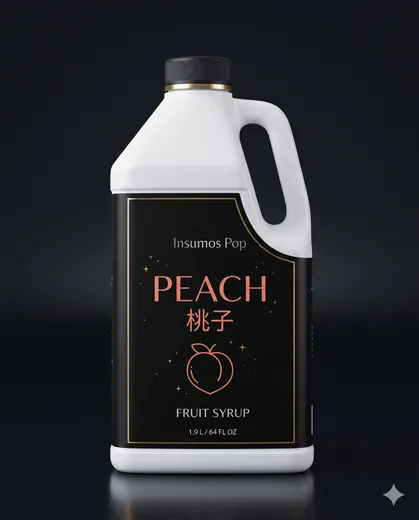
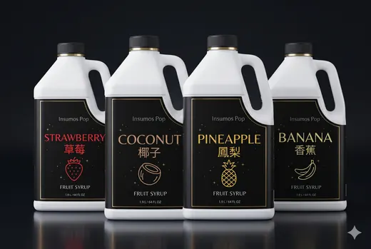

Siropes para bubble tea y bebidas
Siropes de Fruta — Concentrados Asiáticos
果露
Siropes concentrados de fruta en 12 sabores para cócteles, mocktails, sodas, limonadas y té frío.
CóctelesFrappésLattesLimonadasSodas italianasTé de frutas
Ideal para: Bares y coctelería
$110.000 · Botella 1.9 L
En stock
Cotizar ahora
IVA incluido · Confirma el costo y plazo del envío por WhatsApp
Muestra para negocios: consulta condiciones antes del primer pedido.
Sobre este producto
Concentrados de fruta de Taiwán en botella de 1,9 L. La línea incluye mango, maracuyá, fresa, lychee, melocotón, piña, arándano, limón, naranja, toronja, cereza y manzana verde.
La dosis la define cada barra. Con 20 ml por bebida, una botella alcanza para 95 preparaciones y el sirope cuesta cerca de $1.158 por vaso; los demás ingredientes se calculan aparte.
Sabores disponibles
MangoMaracuyáFresaLycheeMelocotónPiñaArándanoLimónNaranjaToronjaCerezaManzana Verde
Recetas con este producto
Especificaciones
| Presentación | Botella 1.9 L |
|---|---|
| Precio | $110.000 (IVA incluido) |
| Sabores | Mango, Maracuyá, Fresa, Lychee, Melocotón, Piña, Arándano, Limón, Naranja, Toronja, Cereza, Manzana Verde |
| Costo por litro | Equivale a ≈ $58.000 por litro de concentrado (botella de 1.9 L), y al ser concentrado, cada botella rinde muchas bebidas. |
| Origen | Taiwán |
| Nombre original | 果露 |
| Referencia (SKU) | IP-SIROPE-19L |
| Conservación | Lugar fresco y seco, protegido de la luz y bien cerrado después de abrir. |
| Dosis y rendimiento | Dependen de tu receta y tamaño de vaso. Escríbenos por WhatsApp y te compartimos la ficha técnica y dosificación recomendada. |
Preguntas frecuentes
¿Cuántos sabores puedo combinar en un pedido?
Los que quieras: arma tu cotización con los sabores que necesita tu barra.
¿Sirven para coctelería?
Sí: son concentrados aptos para cóctel, mocktail, soda italiana, limonada, frappé, latte y té de frutas.